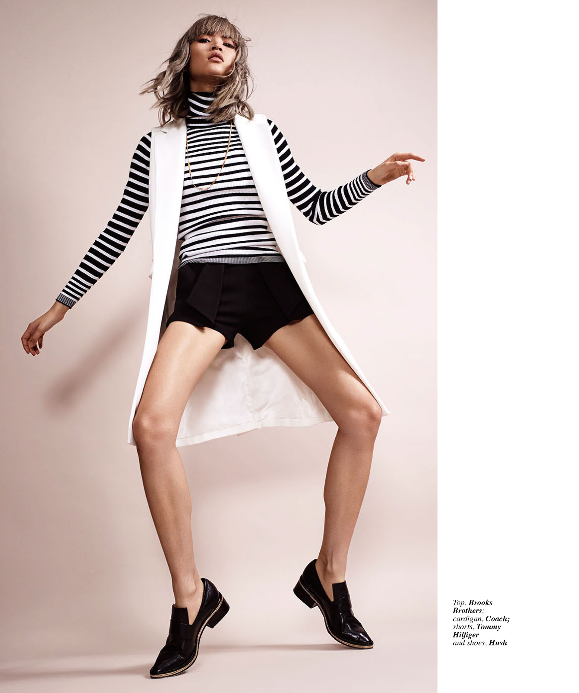
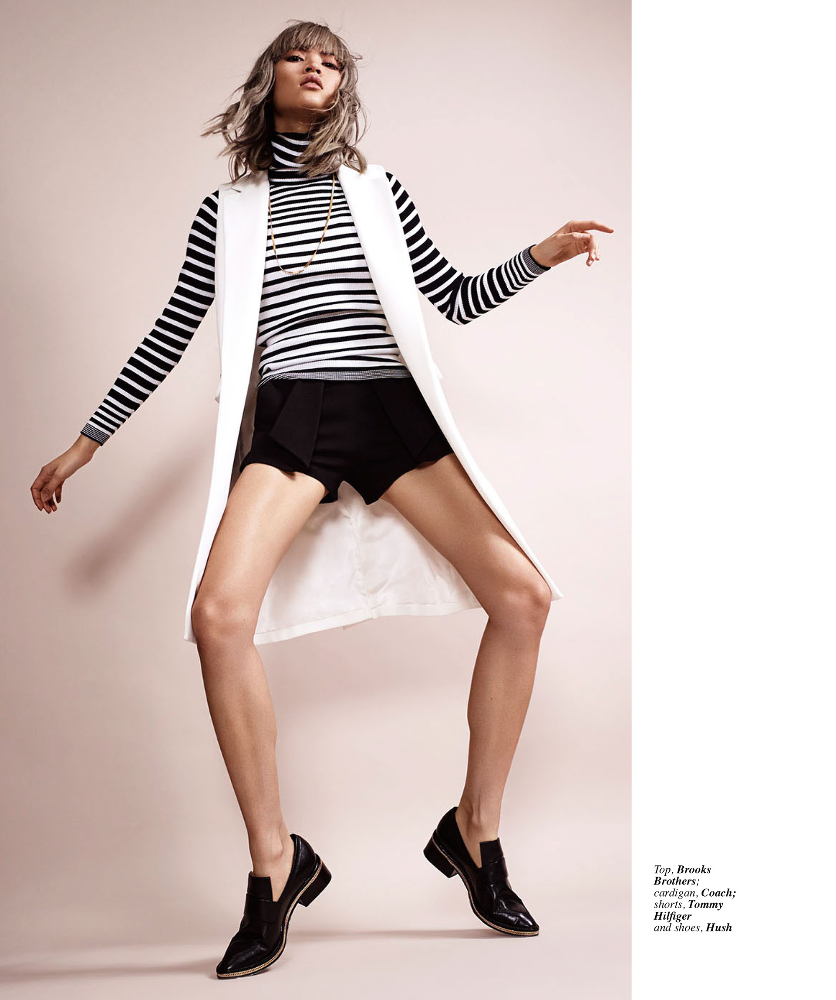

An internal project for ABS-CBN Publishing Inc. during internship. A comprehensive feature editorial layout + advertorial layout that followed the pattern of the fashion lifestyle magazine of the company, Metro Magazine. This was not printed as it was only an activity for the interns. Project preview includes cover, a 5-page feature editorial, an advertorial spread and the mock ups for the said pages.